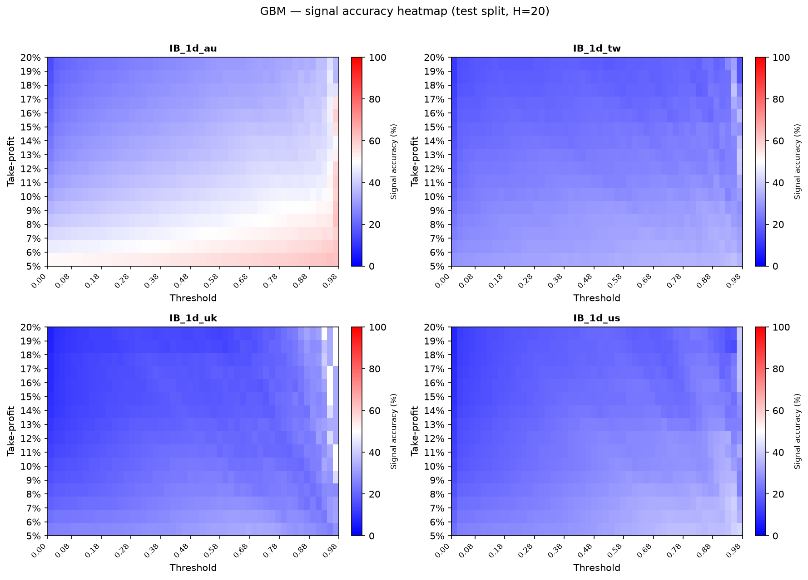
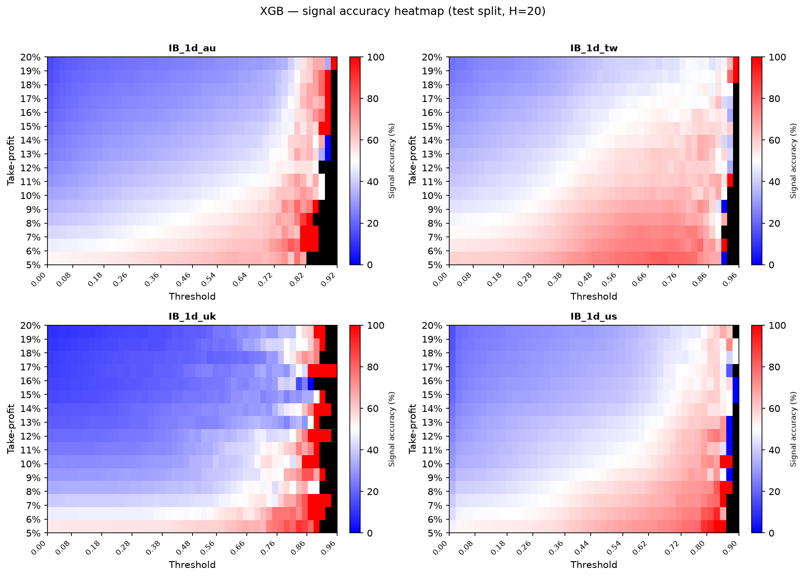
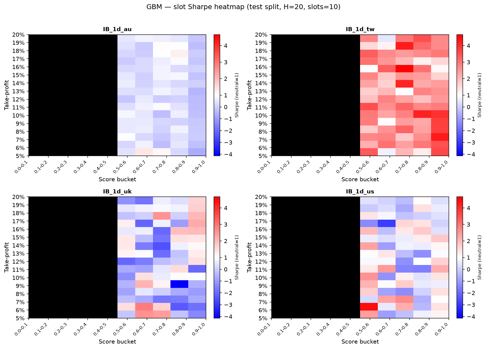
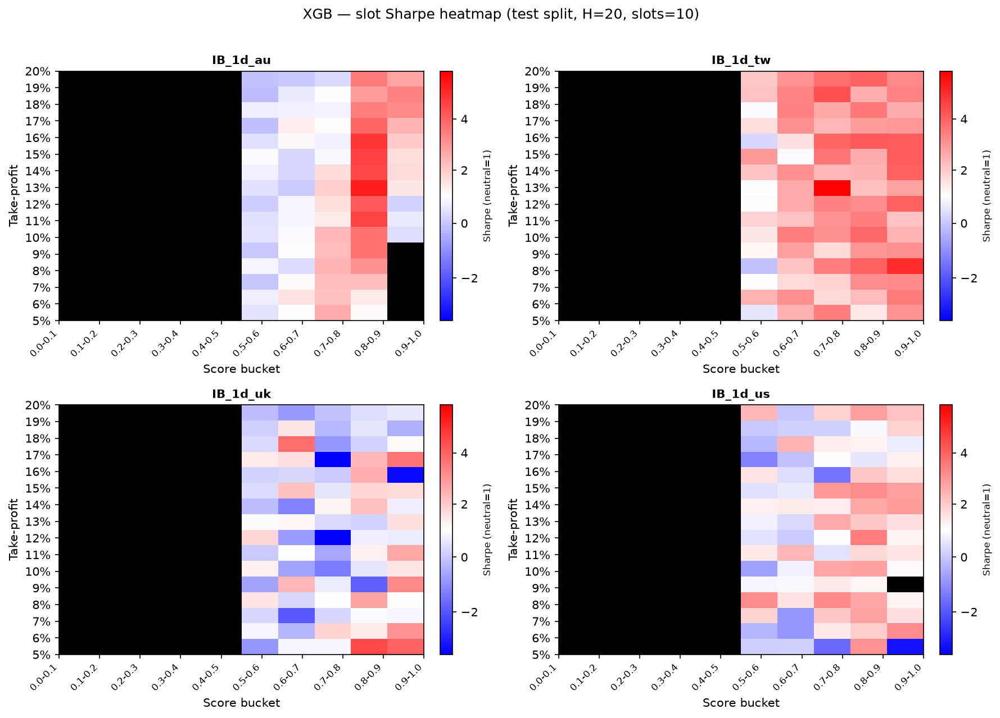
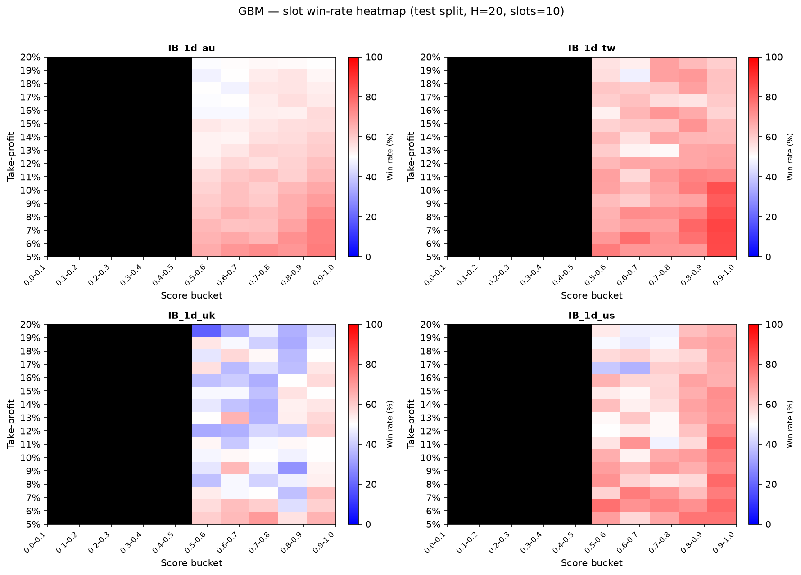
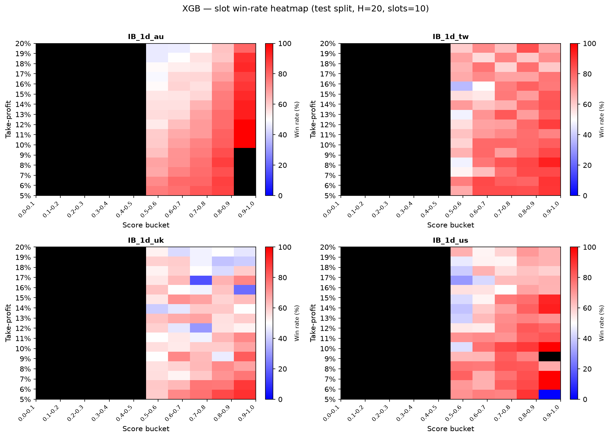

This ongoing project is a equity trading system spanning four markets — Australia (AU), Taiwan (TW), United Kingdom (UK), and United States (US) — on 1-day bars. Two signal engines — a Neural ODE and a trained XGBoost classifier — score the cross-section daily; a slot-based portfolio simulator turns those scores into trades with explicit entry, exit, and cost rules.
Results below are produced on the test split across all four markets. The focus is on whether model scores translate into tradable edge under realistic position limits, barrier exits, and transaction costs — not just offline classification accuracy.
Backtests use a slot-based long-only portfolio with no periodic rebalancing. Positions exit on take-profit, stop-loss, or max-hold; freed slots are refilled the same day from the highest-scoring names still available. Cash from closed positions remains in the cash pool until the next investment opportunity arises.
cash / n_open_slots; unused slot budget stays in cashMIN_ENTRY_SCORE); lower scores are never bought0.02 × √(trade_notional / dollar_volume), capped at 0.5%Heatmaps sweep score buckets (0.0–0.1, 0.1–0.2, …, 0.9–1.0) against TP levels (5%–20%). Each cell is a sub-strategy that only buys names whose score falls in that bucket — not a single blended portfolio. Sharpe ratios are aggregated across AU, TW, UK, and US on the test split.
Both engines target the same economic event: a +TP barrier touch within the 20-day holding window. The difference is how the probability is estimated.
From a 30-day trailing window of log-returns, estimate drift ν and volatility σ. Model log-price as Brownian motion and score each name with the closed-form probability of touching ln(1 + TP) within H = 20 days. No training or checkpoint — the signal definition matches the barrier-exit rule directly.
Train a gradient-boosted classifier on rolling window tensors (window_data) to predict P(+TP surge within H = 20). Scores are aligned back to the cross-sectional panel for slot allocation. Checkpoints are reused when available; otherwise the model trains from window_data on first run.
The repo ships seed data (~200 MB). A one-time preprocessing step builds the full evaluation set (~9 GB): whole_data + raw_data → panel_data (GBM signals, backtests) and window_data (XGB training). Setup commands will be documented in the project repository README once published.
First step: for each score threshold and TP level, measure how often a signal correctly predicts a take-profit hit within h = 20 days. This checks whether model scores rank names by surge likelihood before layering on slot constraints and costs.


With signal quality established, portfolio simulations under the slot-based setup (K = 10, H = 20, SL = TP × 0.5, test split). Heatmaps sweep score buckets and TP levels; metrics below are aggregated across AU, TW, UK, and US.
Risk-adjusted return across score buckets and TP levels. Higher score bins isolate stronger signals; the TP axis shows sensitivity to the exit barrier.


Fraction of closed trades with positive gross return under the same slot backtest. Win rate and Sharpe can diverge when payoff sizes differ across TP levels or score buckets.


Ongoing. The trading loop — signal generation, slot backtest, and signal-accuracy analysis — runs across all four markets. Future work includes feature refinement, additional universes, and live-paper integration.
Code repository link pending — repository URL will be updated before publication.